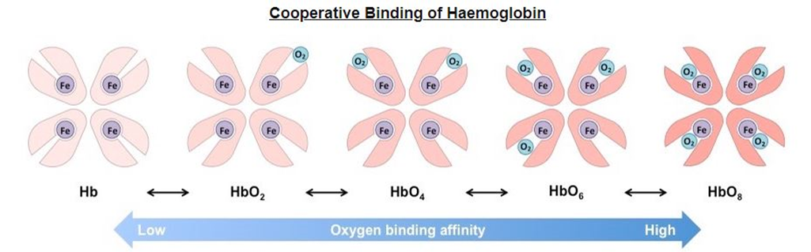

- Hb-O2 Saturation: Affinity of Hb for O2 Changes
- Structure of Hb changes conformation as subsequent O2’s bind or depart.
- Affinity of Hb for O2 increases as more O2 binds -> Hb holds O2 more tightly at higher PO2’s (pulmonary capillary beds).
- Affinity of Hb for O2 decreases as more O2 departs -> Hb holds O2 less tightly at lower PO2’s (tissue capillary beds).
